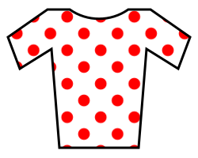
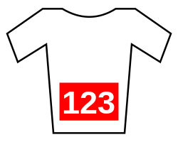

Тур де Франс
«Тур де Франс» (фр. Le Tour de France) - багатоденна велогонка, один з трьох гранд-турів. Найвідоміша і найпрестижніша велосипедна гонка світу, що проводиться вже понад сто років у Франції. Неофіційна назва - «Велика петля».
Історія
Велогонка "Тур де Франс" спочатку була заснована як рекламний проект газети L'Auto (предок нинішнього L'Équipe ), його редактором і співзасновником, Анрі Дегранжем (Henri Desgrange) і був покликаний конкурувати з велогонкою Париж - Брест - Париж (спонсованою газетою Le Petit Journal) і велогонкою Бордо-Париж .
Ідея створення французької петлі належить журналісту L'Auto Жео Лефевру (Géo Lefèvre), з яким Анрі Дегранж обідав у паризькому кафе Café de Madrid (точна дата).Успіх гонки Le Tour de France став великим успіхом і для газети L'Auto, кількість передплатників якої зросла в 1903 з 25 тисяч (до Тура) до 65 тисяч після Тура; 1908 року кількість передплатників газети перевищила 250 тисяч, а під час «Тур де Франс» 1923 рокупродавалося 500 тисяч екземплярів газети на день. Рекордного тиражу газети було досягнуто протягом «Тур де Франс» 1933 року — 854 тисячі екземплярів на день. Сьогодні Тур організовує «Товариство Тур-де-Франс» — філія Amaury Sport Organisation (ASO), яка є частиною медіахолдингу, до якої входить газета L'Équipe.
Тур, який проводиться у Франції та у прилеглому зарубіжжі, проходить щорічно протягом трьох тижнів у липні. Тільки під час першої ( 1915 - 1918 ) і Другої світової війни ( 1940 - 1946 ) тур було скасовано. Велогонку проводить фірма Amaury Sport Organisation (ASO), яка також проводить Ралі Дакар.
Принципи гонки
Тур де Франс складається з 21 етапу. Кожен етап триває один день. Кожен гонщик має закінчити етап, щоб його час було зареєстровано та накопичено.
Повна довжина гонки - між 3000 і 4000 км (траса та протяжність етапів щороку змінюються). Найдовша гонка відбулася в 1926 - 5745 км.
Генеральна класифікація - ранжування гонщиків згідно з накопиченим часом. Переможцем усього Туру стає той гонщик, сумарний час (тобто сума часу всіх етапів) якого є найменшим серед усіх учасників. Можливо виграти весь Тур, не вигравши жодного етапу (Гріг Лемонд зробив це у Фрум у 2017 році ). Перемога на етапі Тура вважається великим досягненням велогонника незалежно від його підсумкового становища у генеральній класифікації.
Крім заліку часу, існують і інші номінації:
- найкращий спринтер. За останній 5 років двоє велогонщиків отримали
дане звання двічі:
- Таде́й Пога́чар (2020, 2021)
- Йонас Вингегор Расмуссен (2022, 2023)
- найкращий гірський гонщик;
- найкращий молодий гонщик.
Лідери у цих номінаціях ведуть боротьбу у певних кольорових майках, про які буде розказано нижче.
Класифікації
-
Генеральна класифікація
Генеральна класифікація Тур де Франс (фр. Classement général) — класифікація за якою визначають спортсмена переможця гонки. Лідер класифікації носить жовту майку ( фр. Maillot jaune), яка з'явилася лише у 1919 році.
Жовта майка лідера ( фр. Maillot jaune ) - відмітна майка велогонника, що лідирує в генеральній класифікації . Вперше введена на Тур де Франс зараз використовується в багатьох інших велогонках. Завдяки їй легко ідентифікувати поточного лідера загального заліку в пелотоні.
-
Очкова класифікація
фр. Classement par points розігрується у рамках Тур де Франс з 1953 року. Переможець визначається за сумою очок, набраних на фінішах етапів та на проміжних фінішах. Цей залік вважається змаганням спринтерів. Лідер класифікації носить зелену майку ( фр. Maillot vert ), яка стала метонімом для очкових класифікацій.
-
Гірська класифікація
фр. Grand Prix de la montagne розігрується у рамках Тур де Франс з 1933 року. Переможець визначається за сумою очок набраних на гірських фінішах і називається "гірським королем". Лідер класифікації носить білу майку з червоним горошком , яку називають просто гороховою майкою ( фр. maillot blanc à pois rouges ), яка з'явилася в 1975 році.
-
Молодіжна класифікація

фр. Classement du meilleur jeune розігрується у рамках Тур де Франс з 1975 року. Розрахунок класифікації проводиться аналогічно генеральної, в даний час враховуються результати гонщиків у віці до 25 років на 1 січня року, в який проводиться гонка. Лідер класифікації носить білу майку ( фр. Maillot Blanc ).
-
Приз найагресивнішому гонщику
фр. Prix de la combativité розігрується у рамках Тур де Франс з 1952 року. Він присуджується найагресивнішому гонщику, який проявив найбільший бойовий дух і командний, атакуючий стиль, хоробрість, мужність. Переможець попереднього етапу та всієї класифікації отримує червоний номер ( фр. dossard rouge ).
-
Командна класифікація
фр. Classement d'équipes розігрується у рамках Тур де Франс з 1930 року. Переможець визначався за сумою трьох найкращих часів учасників команди, показаних на кожному етапі. Лідер класифікації отримує жовтий номер ( фр. dossard jaune ) та жовтий шолом .
-
Комбінована класифікація
фр. Classement du combiné розігрувалась у рамках Тур де Франс з 1968 по 1989. Переможець визначався за сумою місць, зайнятих у генеральній , гірській та спринтерській класифікаціях. Лідер класифікації носив комбіновану майку ( фр. maillot du combiné ).
-
Класифікація проміжні спринти
фр. Classement des sprints intermédiaires розігрувалась у рамках Тур де Франс з 1971 по 1989. Переможець визначався за сумою очок, набраних на проміжних фінішах. Лідер класифікації носив червону майку ( фр. Maillot rouge ).
Грошові премії
З 2007 року існують такі грошові премії: € 450 000 отримує переможець перегонів. По € 25 000 отримують володарі зеленої та горохової майок (кращий спринтер та найкращий на гірських етапах) € 20 000 – найкращому молодому спортсмену за підсумками перегонів. € 8000 – нагороди переможцям кожного етапу. € 800 – приз переможцю проміжного спринту. € 350 – денна премія володарю жовтої майки. € 300 - денна премія власникам зеленої, білої та горохової майок. € 20 000 - премія супер агресивному гонщику всієї «петлі». € 2000 - щоденна премія найагресивнішому гонщику. За традицією, виграш ділиться між усіма членами команди порівну.
Власники та директори Тур де Франс
З 1903 до 1939 року організатором Тур де Франс була спортивна газета L'Auto, головний редактор якої Анрі Дегранж став першим директором гонки. Після війни граф Альберт де Діон продає свою частку L'Auto Віктору Годді, фінансовому адміністратору Тур де Франс у перші роки. Після смерті останнього 1926 року, його старший син Моріс Годде стає головним акціонером газети, тоді як Анрі Дегранж залишається директором Тура. Він бере під своє крило Жака Годде , другого сина Віктора, який після свого першого Тура 1928 року входить до газети L'Auto, щоб брати участь в організації гонки. Після звільнення Франції L'Auto забороняється виходити, проте її активи, включаючи Тур де Франс, секвестуються державою. Гонка була продана Parc des Princes під керуванням Жака Годде, який досяг успіху з Десгранджем на чолі L'Auto. Він поклав організацію Тура на нові щоденні газети – спортивну L'Équipe та громадську Le Parisien. Годдіт залишається на чолі Тур де Франс до 1987 року. З 1962 по 1987 його помічником був Фелікс Левітан , голова спортивного відділу Le Parisien. У 1965 році Éditions Philippe Amaury , власники Le Parisien, купують L'Équipe. Таким чином, цей видавничий будинок стає власником Тур де Франс, який все ще організує Le Parisien і Le Parisien, аж до 1973 року. У 1973 році організації Тура довіряється дочірньою компанією видавця. У 1993 році він став філією Amaury Sport Organisation, дочірньої компанії Amaury Group, що спеціалізується на організації спортивних заходів. Потім Société du Tour de France поєдналася з ASO , щоб стати велосипедним відділенням. Після короткочасного керівництва гонкою Жан-Франсуа Наке-Радіге (1987) та Жан-П'єра Курколь (1988) у 1989 році директором гонки стає Жан-Марі Леблан . У 2007 його змінює Крістіан Прюдомм .